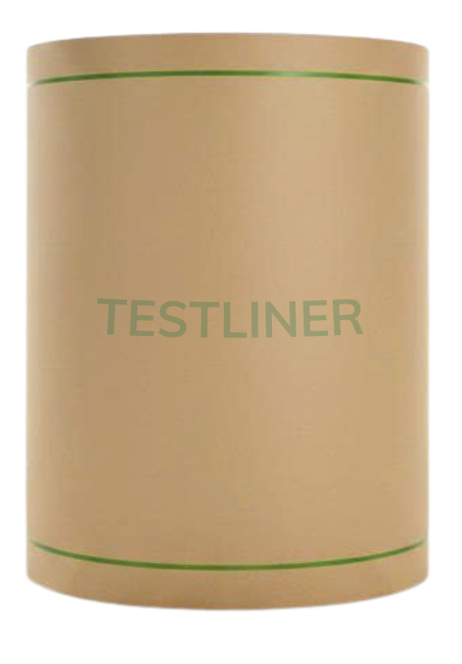

Mô tả, ứng dụng, tiêu chuẩn chất lượng của giấy Testliner

GIẤY TESTLINER
Dùng làm lớp mặt hoặc lớp lót cho thùng carton, hộp carton và các sản phẩm bao bì giấy khác, giúp tăng khả năng chịu lực, độ bền và tính thẩm mỹ của bao bì.
Sản phẩm được sản xuất từ 100% giấy phế liệu thu hồi đã chọn lọc, phối màu lớp mặt và gia keo hai mặt, đảm bảo các chỉ tiêu về độ chống thấm, độ bục, độ nén vòng và đáp ứng các tiêu chuẩn chất lượng đã công bố hoặc theo yêu cầu của Khách hàng.
| Khổ giấy | 4.200mm | 4.600mm |
|---|---|---|
| Định lượng | 135–220 g/m² | 80–130 g/m² |
*Chia khổ giấy theo yêu cầu của Khách hàng
BẢNG TIÊU CHUẨN CHẤT LƯỢNG
| Chỉ tiêu vật lý | Loại giấy | Testliner N | ||||||||||||||
|---|---|---|---|---|---|---|---|---|---|---|---|---|---|---|---|---|
| Đơn vị | 85 | 90 | 100 | 110 | 120 | 130 | 140 | 150 | 160 | 170 | 180 | 190 | 200 | |||
| Định lượng | g/m² | Trung bình | 85±3 | 90±3 | 100±4 | 110±4 | 120±4 | 130±4 | 140±4 | 150±5 | 160±5 | 170±5 | 180±5 | 190±6 | 200±6 | |
| Độ chịu bục | Cường độ | Kgf/cm² | ≥ | 2.2 | 2.4 | 2.6 | 2.8 | 2.9 | 3.1 | 3.6 | 3.8 | 4.1 | 4.3 | 4.6 | 4.8 | 5.1 |
| Chỉ số | Kpa.m²/g | ≥ | 2.5 | 2.5 | 2.5 | 2.5 | 2.5 | 2.5 | 2.5 | 2.5 | 2.5 | 2.5 | 2.5 | 2.5 | 2.5 | |
| Độ bền gấp (chiều ngang) | Lần | ≥ | 15 | 15 | 15 | 15 | 15 | 15 | 15 | 15 | 15 | 15 | 15 | 15 | 15 | |
| Độ Cobb60′ (Một trước/Một sau) | g/m² | ≤ | 60/100 | 60/100 | 60/100 | 60/100 | 60/100 | 60/100 | 60/100 | 60/100 | 60/100 | 60/100 | 60/100 | 60/100 | 60/100 | |
| Độ bóng/nhẵn mịn | S | ≥ | 7 | 7 | 7 | 7 | 7 | 7 | 7 | 7 | 7 | 7 | 7 | 7 | 7 | |
| Độ ẩm | % | Trung bình | 8±2 | 8±2 | 8±2 | 8±2 | 8±2 | 8±2 | 8±2 | 8±2 | 8±2 | 8±2 | 8±2 | 8±2 | 8±2 | |
| Màu giấy | (L*/a*/b*) | — | 58 ± 1.05/8.5 ± 0.5/21.0 ± 0.5 | |||||||||||||
* Xử lý mẫu thử: Nhiệt độ: 23±1°C tương ứng với độ ẩm: 50±2%
* Cách test: Căn cứ theo tiêu chuẩn ISO
* Ngày ban hành: 01/04/2026
* Phương pháp kiểm tra: Định lượng: TCVN 1270-2017 (ISO 536:2012) · Độ chịu bục: TCVN 7632-2019 (ISO 2759:2014)
* Độ Cobb60°: TCVN 6726-2017 (ISO 535:2014) · Độ ẩm: TCVN 1867-2010 (ISO 287-2009) · Độ nhẵn: TCVN 8727-2007 (ISO 5627-1995) · Độ bền gấp: TCVN 1866-2007 (ISO 5626-1993)
* Sản phẩm này khuyến nghị không dùng ở điều kiện độ ẩm cao, đông lạnh hoặc ẩm ướt
* Trường hợp khách hàng có yêu cầu cần điều chỉnh (tăng hoặc giảm) đối với các chỉ tiêu (độ bục, độ nén vòng, độ chống thấm…), hai bên sẽ thỏa thuận và thống nhất trên từng đơn hàng cụ thể
* Sản phẩm được cấp chứng chỉ FSC: Nhà máy được Hội đồng Công trình Xanh Hoa Kỳ cấp chứng nhận LEED SILVER; HHP GLOBAL đã tuyên bố chiến lược phát triển bền vững và cam kết thực hành ESG (Môi trường, Xã hội và Quản trị), hướng đến mục tiêu Net Zero trước năm 2035
| Chỉ tiêu vật lý | Loại giấy | Testliner H | ||||||||||||||
|---|---|---|---|---|---|---|---|---|---|---|---|---|---|---|---|---|
| Đơn vị | 85 | 90 | 100 | 110 | 120 | 130 | 140 | 150 | 160 | 170 | 180 | 190 | 200 | |||
| Định lượng | g/m² | Trung bình | 85±3 | 90±3 | 100±4 | 110±4 | 120±4 | 130±4 | 140±4 | 150±5 | 160±5 | 170±5 | 180±5 | 190±6 | 200±6 | |
| Độ chịu bục | Cường độ | Kgf/cm² | ≥ | 2.4 | 2.6 | 2.9 | 3.1 | 3.4 | 3.7 | 4.0 | 4.3 | 4.6 | 4.9 | 5.1 | 5.4 | 5.7 |
| Chỉ số | Kpa.m²/g | ≥ | 2.8 | 2.8 | 2.8 | 2.8 | 2.8 | 2.8 | 2.8 | 2.8 | 2.8 | 2.8 | 2.8 | 2.8 | 2.8 | |
| Độ bền gấp (chiều ngang) | Lần | ≥ | 25 | 25 | 25 | 25 | 25 | 25 | 25 | 25 | 25 | 25 | 25 | 25 | 25 | |
| Độ Cobb60′ (Một trước/Một sau) | g/m² | ≤ | 60/100 | 60/100 | 60/100 | 60/100 | 60/100 | 60/100 | 60/100 | 60/100 | 60/100 | 60/100 | 60/100 | 60/100 | 60/100 | |
| Độ bóng/nhẵn mịn | S | ≥ | 8 | 8 | 8 | 8 | 8 | 8 | 8 | 8 | 8 | 8 | 8 | 8 | 8 | |
| Độ ẩm | % | Trung bình | 8±2 | 8±2 | 8±2 | 8±2 | 8±2 | 8±2 | 8±2 | 8±2 | 8±2 | 8±2 | 8±2 | 8±2 | 8±2 | |
| Màu giấy | (L*/a*/b*) | — | 58 ± 1.05/8.5 ± 0.5/21.0 ± 0.5 | |||||||||||||
* Xử lý mẫu thử: Nhiệt độ: 23±1°C tương ứng với độ ẩm: 50±2%
* Cách test: Căn cứ theo tiêu chuẩn ISO
* Ngày ban hành: 01/04/2026
* Phương pháp kiểm tra: Định lượng: TCVN 1270-2017 (ISO 536:2012) · Độ chịu bục: TCVN 7632-2019 (ISO 2759:2014)
* Độ Cobb60°: TCVN 6726-2017 (ISO 535:2014) · Độ ẩm: TCVN 1867-2010 (ISO 287-2009) · Độ nhẵn: TCVN 8727-2007 (ISO 5627-1995) · Độ bền gấp: TCVN 1866-2007 (ISO 5626-1993)
* Sản phẩm này khuyến nghị không dùng ở điều kiện độ ẩm cao, đông lạnh hoặc ẩm ướt
* Trường hợp khách hàng có yêu cầu cần điều chỉnh (tăng hoặc giảm) đối với các chỉ tiêu (độ bục, độ nén vòng, độ chống thấm…), hai bên sẽ thỏa thuận và thống nhất trên từng đơn hàng cụ thể
* Sản phẩm được cấp chứng chỉ FSC: Nhà máy được Hội đồng Công trình Xanh Hoa Kỳ cấp chứng nhận LEED SILVER; HHP GLOBAL đã tuyên bố chiến lược phát triển bền vững và cam kết thực hành ESG (Môi trường, Xã hội và Quản trị), hướng đến mục tiêu Net Zero trước năm 2035